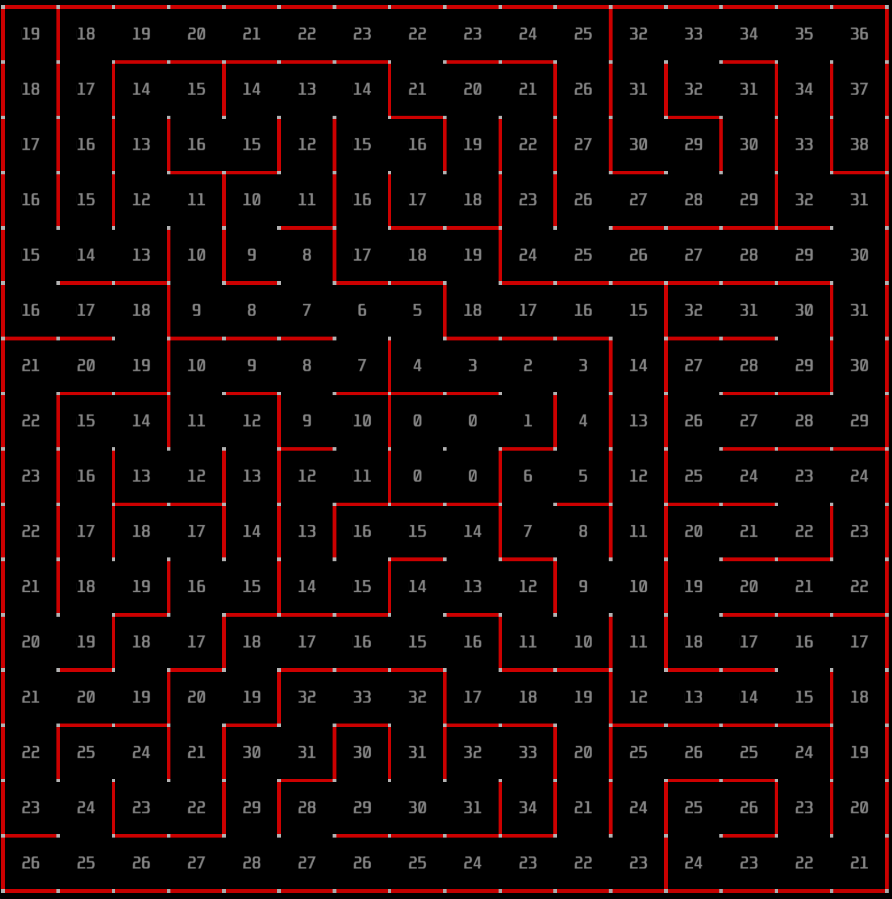

Project 1
Floodfill
By Adam Wu
Overview
To solve the maze, our mouse needs to be able to navigate to the center of a 16x16 maze. We want to do this as efficiently as possible and achieve the best possible time, so we need an algorithm to find the shortest path, given any maze with any configuration of walls.
This may seem very difficult, but using an algorithm called floodfill we can confidently chart out the shortest path from any given point to any other given point on the maze. Floodfill is the most popular algorithm used in the Micromouse competition. If the mouse knows where every single wall is, using floodfill it will always be able to find the shortest path to the goal cell. You will find as you progress in micromouse that the hard part isn’t finding the shortest path, but rather discovering enough of the maze to create an accurate representation. We won’t cover that for now, but keep that in mind as you think about how you wish to improve upon the guidelines we provide in this course.
Intuition
Before we explore the specifics of the algorithm, it’s important to have a high-level understanding of how it works. As indicated by its name, a good way to visualize the Floodfill algorithm is by imagining a flood expanding out from your goal position. Imagine a bucket of water being placed in the center cell of a 16 x 16 maze. Immediately, it would spill out and expand to other cells. However if there were a wall, it would stop the water from flowing, redirecting it elsewhere. If there is enough water being added to the goal cell, eventually the entire maze will be filled with water (unless there are closed areas).

So far, this scenario doesn’t seem to be very helpful for maze-solving but now imagine that we have observers watching the maze, recording how long it takes for each cell to get wet. By referencing these times, we now know the relative distance from any given cell to our goal position. For example, a cell immediately adjacent to our goal position would have gotten wet immediately, but it would take much longer for the water to travel to a cell in the corner. This is the intuition behind Floodfill: starting at the goal position and spreading out to adjacent non-blocked cells, assigning ever increasing distances to each iteration of cells, until the entire maze is filled. The result should be something like this:
Now that we understand the intuition behind Floodfill, let’s look at a pseudocode representation of the algorithm, then dive into each part.
def floodfill():
queue.append[goal_cell]
while not queue.is_empty:
for cell in get_neighbors(queue.head):
if cell is_not_blocked:
cell.distance = curr_distance
queue.append[cell]
queue.remove_cell(cell)
curr_distance++
That’s it! At its core, floodfill is a very simple algorithm, and with only a few lines we can implement the behavior mentioned previously. Put into English, our approach will be to start at the goal cell and continuously iterate through all the neighboring cells that aren’t blocked by walls. These cells are assigned a distance, and then added to the end of the queue. We will keep a counter variable to keep track of the distance from the goal, and we will increment it by one each iteration of the loop. Then we simply repeat the process for every neighboring cell until there are no more cells in the maze. To implement this behavior we will need two modules: a queue and a get_neighbors() function.
Queue
The queue is a basic and very common data structure that every programmer should be familiar with. To visualize a queue, imagine a line for the grocery checkout. If there are many people waiting in line and the cashier becomes available, the person who has been waiting the longest at the front of the line will be the first to leave. This is exactly how a queue (which is just another word for line) works: elements are added to a list, and when we remove elements, the order is maintained and used such that the first-added item will be removed.
In C, the most typical and straightforward implementation of a queue is through the use of an array along with a head and a tail pointer. The array will store the elements themselves, and because arrays are ordered, it is able to record the order in which we added them. The head pointer is simply an integer which holds the index of the current oldest/first added item in the queue, and the tail holds the last item. Whenever we add items, we append it to the array and increment the tail pointer. When we remove items, we copy the item at the index specified by the head pointer and then increment the pointer by one. Adding items to the end of the queue is called “pushing” while removing items from the front is called “popping”. When the head and tail pointers are equal, we know there are no items left in the queue.